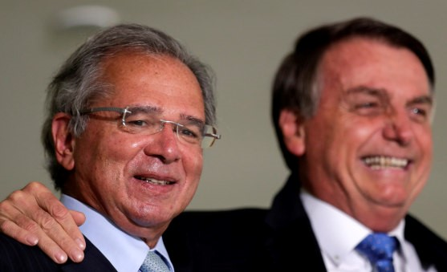

A equipe econômica quer evitar que o presidente Jair Bolsonaro ceda a tentações de abandonar a agenda de ajuste fiscal e abrace a visão de que é preciso continuar gastando no pós-pandemia. O presidente tem recebido documentos que mostram a importância de apoiar propostas como a PEC do Pacto Federativo e alertam para os riscos de o governo não retomar as reformas.
Há um temor de que, passada a disputa eleitoral nos estados, vozes como a do ministro do Desenvolvimento Regional, Rogério Marinho, ganhem mais influência junto ao presidente.

O fraco desempenho dos candidatos apoiados por Bolsonaro tenderia a reforçar a visão de que é preciso fazer mais investimentos nos estados, uma bandeira de Marinho, afirma uma fonte da área econômica. Marinho, no entanto, não seria um nome viável para comandar a Economia porque Paulo Guedes já conseguiu colar nele o rótulo de fura-teto.
Fonte: https://www.moneytimes.com.br/guedes-alerta-bolsonaro-sobre-tentacoes-de-abandonar-agenda-fiscal/